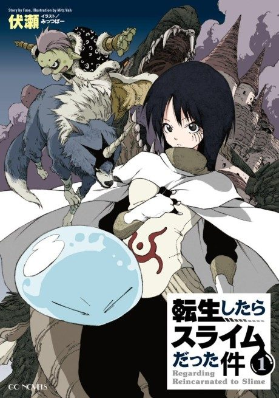

Animeter
 Anime
Anime
Light novel2018 · Action, Adventure, Comedy
That Time I Got Reincarnated as a Slime
転生したらスライムだった件
AniList8.0
Animeter—
5 seasons96 ep
SourceUnclear
5 seasons, 96 episodes
In airing order. Episode numbers on this site count straight through every season, so season 2 starts at episode 25.
1
2018 · TV
That Time I Got Reincarnated as a Slime
Episodes1–2424 ep
2
2021 · TV
That Time I Got Reincarnated as a Slime Season 2
Episodes25–3612 ep
3
2021 · TV
That Time I Got Reincarnated as a Slime Season 2 Part 2
Episodes37–4812 ep
4
2024 · TV
That Time I Got Reincarnated as a Slime Season 3
Episodes49–7224 ep
5
2026 · TV
That Time I Got Reincarnated as a Slime Season 4
Episodes73–9624 ep
Films, OVAs and specials
Not counted in the episode numbers above.
·
2023 · OVA
That Time I Got Reincarnated as a Slime: Visions of Coleus
·
2026 · Film
That Time I Got Reincarnated as a Slime the Movie: Tears of the Azure Sea
Sources: AniList